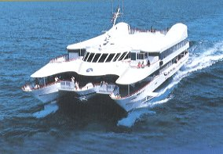
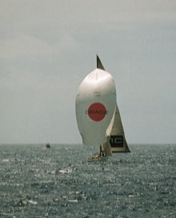
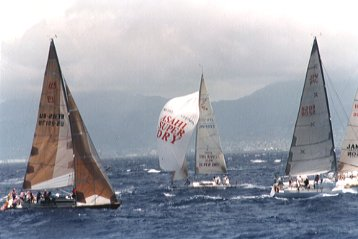
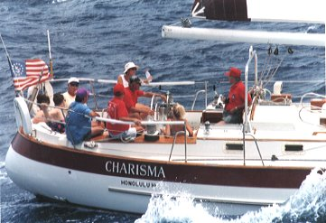
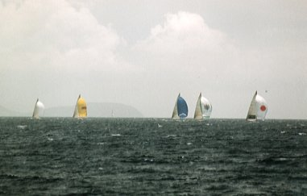
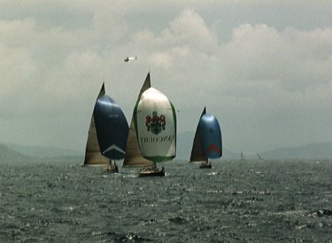
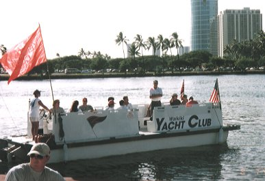
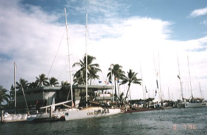
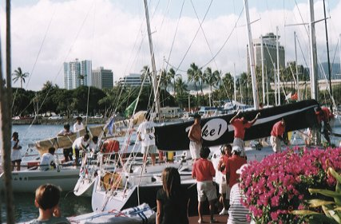
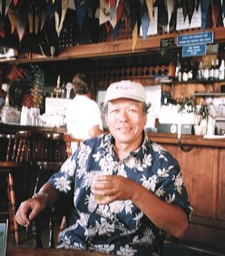

外洋ヨットのグランプリレース、「ケンウッドカップ・1996」は8月5日から16日までハワイ・ワイキキ沖で開催され、
8カ国64挺が参加する文字通りのビックイベントとなった。
全長25メーター前後の大型マキシクラスから10メーター前後の小型クラスまで、
個性ある各挺がそれぞれのセーリング・テクニックを思う存分に競った。
【ケンウッドカップ獲得を目指す10のナショナルチーム】
ケンウッドカップはレースの名称でもあるが、このレースにかけられた優勝カップの名称でもある。
そして、このカップを手に出来るのは国を代表して結成されたナショナルチームだけなのだ。
3挺で構成されるナショナルチームは1カ国3チームまで参加できるが、今回は日本から3、アメリカから３、
オーストラリアから2、香港から1、ニュージーランドから1と全部で9チームが参加した。
前回、ケンウッドカップを獲得したのはアメリカ。また、日本は92年大会で優勝している。この優勝は日本にとって、外洋ヨットのシリーズレースでは初のメジャーレース制覇の画期的な出来事だった。
もちろん、ケンウッドカップはナショナルチームだけのレースではない。 ナショナルチームに含まれない個別挺は、
ケンウッドボウルと呼ばれるトロフィーをかけて競う。
【乗り手もヨットも大物ぞろい、注目を浴びる大型挺クラス】
8カ国46挺の参加挺は様々なクラスで自分たちのセーリング・テクニックを競うが、注目されるのは大型挺が集まるマキシクラス。
今回は参加挺7挺のうち5挺が最新デザインで、しかもヨットレース界のそうそうたるメンバーが名を連ねた。
前回のアメリカズカップでデニス・コナーの片腕をつとめ大活躍したポール・ケヤー(米)。
そのケヤーとライバル関係にあったエド・ベヤード。日本でもお馴染みのクリス・ディクソン(ニュージーランド)、
アメリカズカップ獲得スキッパーのラッセル・クーツ(ニュージーランド)など等。

観戦はハイテク双胴船・NAVATEK 1号から
【1996 ナショナルチームのリスト】
日本：レッド・チーム＝シーホーク、マリオ・エクスプレス、サンタレッド
日本：ホワイト・チーム＝テイク１、ジャスト７、Ｘドリーム
日本：ブルー・チーム＝ドリームピック、リベルテ・エクスプレス、ザ・スピリット・オブ・シーボニア
【1996 ILCマキシクラス参加挺】

豪州：エクサイル(R/P 65)
米国：カシオペア(Davidson 72)
米国：サガモア(S & S 78)
米国：サヨナラ(Farr 78)
米国：ファルコン 2000(N/M 78)
ドイツ：ファンコート・モーニング・クローリー(R/P 80)
米国：ブーメラン(Feres 80)
【1996 参加日本挺】
45-60クラス：ドリームピック(Farr 44)
41-44クラス：グランド・アヤ(Farr 41)
41-44クラス：ゼネット(Farr ILC 40)
35-40クラス：エックス・ドリーム(X-119 Charter)
35-40クラス：サンダンス・ハワイ(J-35)
35-40クラス：ジャスト・セブン(N/M 35)
35-40クラス：スピリット・オブ・シーボニア(J-35)
35-40クラス：チーム・モロイソ(X-119 Charter)
35-40クラス：テイク・ワン(Farr 39)
35-40クラス：ラブ・ア・ラック(Elliott 40)
マム36クラス：
アオバ・エクスプレス、サーバー、サンタ・レッド、シーホーク
シーホーク・ハイ・ファイブ、マリオ・エクスプレス


マーカーを廻るレース挺


健闘する日本挺(バックはホノルル)


CHARISMA挺（左） / レースのスタート


大型挺のバトル
【Waikiki Yacht Club】

Waikiki Yacht Clubへは"渡し船"で


ヨットクラブは会員以外の入場は禁止だが...。

Yacht Clubのバーで休憩する筆者
KENWOOD CUPは隔年で8月に開催されます。
|